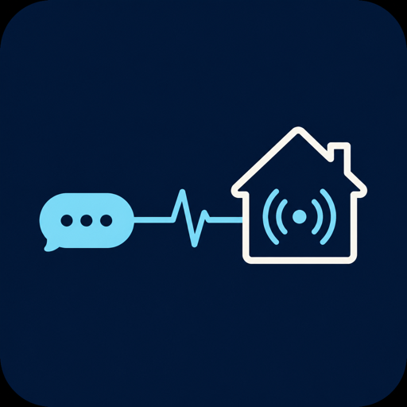

Пришло личное сообщение в Time Messenger. Через пару секунд на кухне моргнула лампа, а на телефон прилетел пуш. Интеграция превращает ваши личные сообщения в обычные события Home Assistant, из которых можно собрать любую автоматизацию.
Вы подключаете свою личную учётную запись Time Messenger, и как только кому-то приходит в голову написать вам напрямую, Home Assistant узнаёт об этом сразу: сообщение приходит по WebSocket, без периодического опроса. Дальше вы решаете, что с этим делать — включить свет, сказать вслух через колонку, отправить уведомление на телефон или что угодно ещё, на что способны ваши автоматизации.
Новые личные сообщения приходят по WebSocket сразу, без опроса и задержек.
«Личное сообщение» выбирается прямо в визуальном редакторе автоматизаций, без ручного YAML.
Текст сообщения скрыт, пока вы явно не включите его в настройках интеграции.
Одно и то же сообщение не прилетит дважды, даже после переподключения или перезапуска Home Assistant.
Settings → Devices & services → Add integration.Полная инструкция по установке без HACS, способам входа (OAuth, персональный токен, логин и пароль) и настройке приватности — в README репозитория.
Событие приходит от сущности «Личное сообщение» и запускает любое действие Home Assistant:
alias: Time Messenger, новое личное сообщение
triggers:
- trigger: event.received
target:
entity_id: event.time_messenger_direct_message
options:
event_type:
- direct_message
actions:
- action: persistent_notification.create
data:
title: Time Messenger
message: >-
{{ trigger.to_state.attributes.message_text
or ('Новое сообщение от '
~ (trigger.to_state.attributes.sender_username
| default(trigger.to_state.attributes.sender_user_id, true))) }}
mode: queuedБольше рецептов, включая озвучку через Алису, — в README.